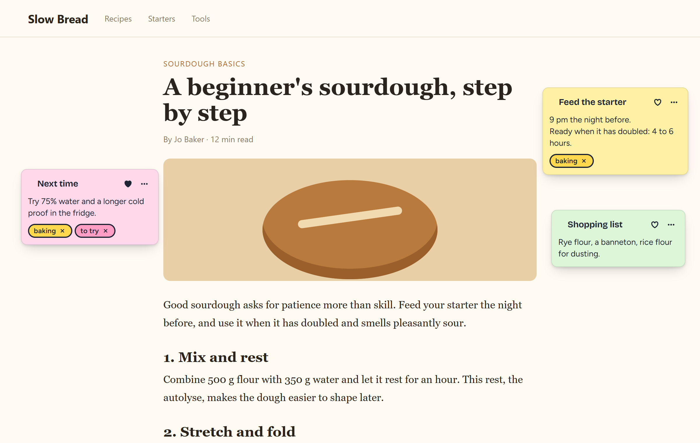

Docamatic
Sticky notes for
the web
Notes on any page, right where you left them. Search, tags and favorites built in.
Free
No account
Private
A beginner's sourdough, step by step
slowbread.blog/sourdough-step-by-step
